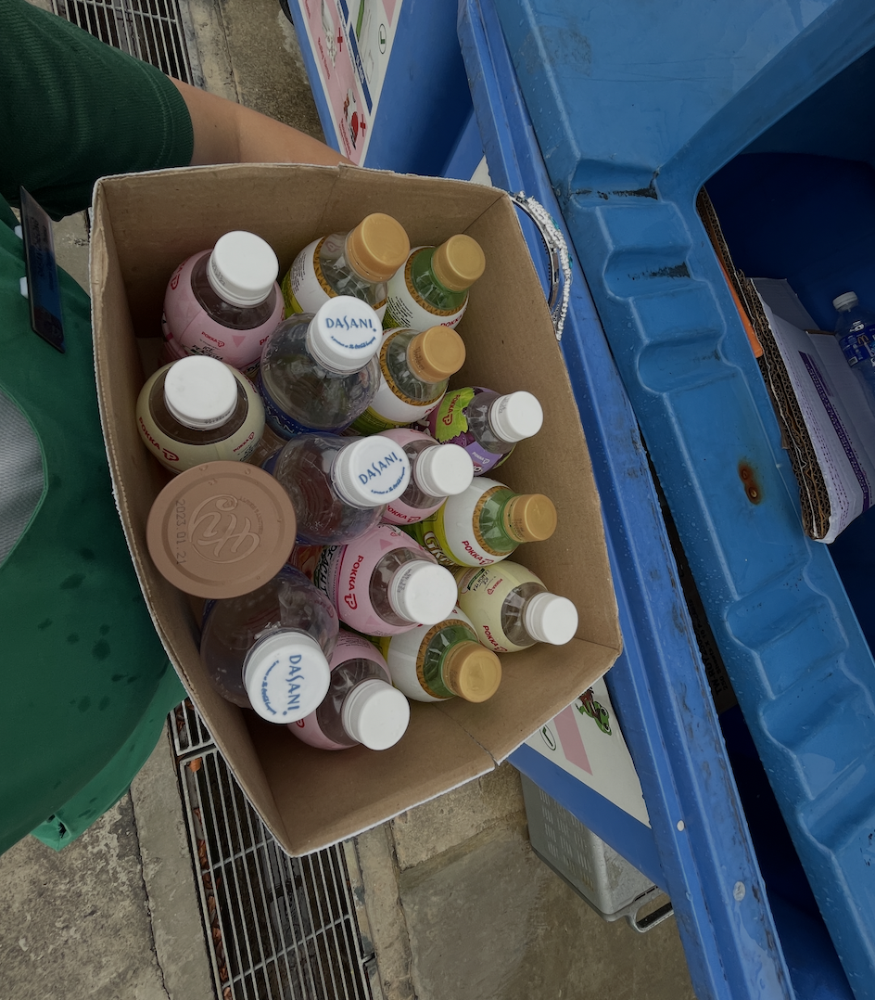
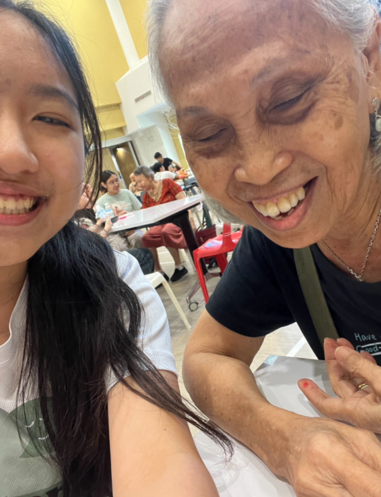
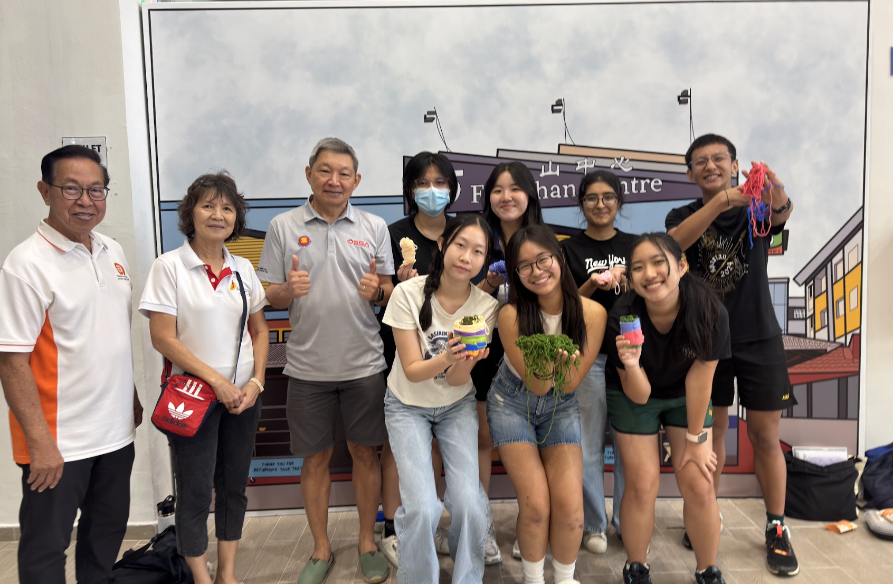
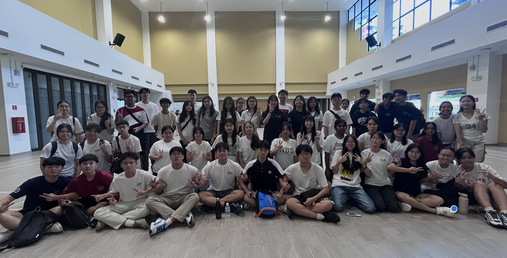

How The Bettering Branch began & where we are headed!
The Bettering Branch started as a small idea that had been at the back of my mind since the start of my final year in secondary school. I was always extremely lucky to be surrounded by wonderful friends that were nothing but kind and compassionate towards me, yet I noticed they didn’t exactly care about or act on social and environmental issues like I did. I still vividly recall the days where I would collect empty plastic bottles from my friends after lunch to bring to the recycling bin after school, as well as the times I ‘lectured’ them for not finishing their meals and wasting food during lunch or recess.
As a student myself, I understood exactly how difficult it was to balance school alongside not just meaningful service, but anything extra at all. For my friends and I, about 2-3 days out of the 5 school days a week included getting up at 7am for school and reaching home at 7pm after CCA. What followed every night was then either homework or revision for the next exam or weighted assessment. So I could never see fault in my friends for not caring, because there was never really time to care or learn to care. Yes, there were service projects in school that everyone did and the curriculum taught us about social issues. But structured school programs, however well intentioned, are bound by timetables and curriculums. Furthermore, mandatory participation isn't the same as genuine connection. In fact, to some of my peers, it deterred them from it. It felt forced. That said, I knew my friends and peers were never devoid of empathy. After all, they cared for me. What they were missing from the social and environment issues was a genuine connection.
And so, after my GCE O-Levels, I decided to do something about it. I had looked for initiatives and organisations that I could join, but the search was futile, for I could not find what I was looking for.
But I decided the problem was too big to ignore. So with absolutely zero idea as to what I was doing, only that it needed to be done, I decided to start my own project. With no mentors, institutional support, funding or a blueprint, I begged my friends to join my cause, and in January 2024, The Bettering Branch was born.

The Bettering Branch's very first activity/event, a beach cleanup! Almost everyone in this picture were friends I personally rallied or friends of friends that I convinced to come.

Picture I dug up from when I was 15 and used to collect plastic bottles after lunch/recess from my classmates in secondary school, before bringing them to the recycling bin.

Our biggest event, The Bettering Run! It's still crazy to me that over 70 youths were willing to wake up at 6am on a weekend to come down to help us out.
Since then, The Bettering Branch has surpassed my expectations in every way possible. There are so many highlights for 2025, from being awarded the Victoria Pioneer Award, to launching our first edition of The Bettering Run that saw over 200 participants.
Moreover, when we first began, we were clear on the idea that we’d only organise ad-hoc activities because we understood long-term programmes were tricky in terms of commitment, but with the launch of Mission Lighthouse in 2025, something we took a leap with, we realised some of our volunteers had genuinely found joy in giving back, and that it didn’t feel like ‘work’. They’d sacrifice precious rest time to go help out because it was something they genuinely enjoyed.
Not forgetting Recycle Red!, something I cannot be prouder of. A nationwide youth effort to divert 435KG worth of red packets (approx over 100K red packets) from landfills, that started with one stubborn girl who refused to throw away her used red packets (me).
Lastly, our senior luncheons at Fengshan Community Centre, designed to be one of our most accessible and beginner-friendly events. Seeing first-time volunteers come up to me and ask ‘So when’s the next session’, and then seeing them at the subsequent ones, I really could not be happier.

A selfie of me & Mdm Goh, a frequent attendee for the Senior Luncheons at Fengshan Community Club :)

Our very first Seniors Luncheon with Fengshan Community Club in 2024. I could only find 7 volunteers (including myself) to join, of which my friends or friends of friends.

Today, our Seniors Luncheons see up to 60 youths come together on Saturday mornings to support seniors living around Fengshan. I couldn't be prouder of how far we've come!
Of course, none of this would ever be possible without the support of my co-founders, team, the volunteers, our partners, sponsors, and everyone else that took a chance on us. Over 300 cold emails, texts and outreach messages since the beginning indeed paid off.
Moving into 2026, The Bettering Branch remains committed to deepening our impact via our empathy-led approach. Branching out for the better, we hope to expand our volunteer base, events and opportunities. Moreover, the planning for the 2026 editions of The Bettering Run and Recycle Red! have already begun and we will be piloting our new tech-based initiative The Bettering Passport soon.
I am so excited and cannot wait to see what 2026 brings. Thank you so much once again for everyone’s support!
Sincerely,
Raean Cheong
Founder & Head of Organisation